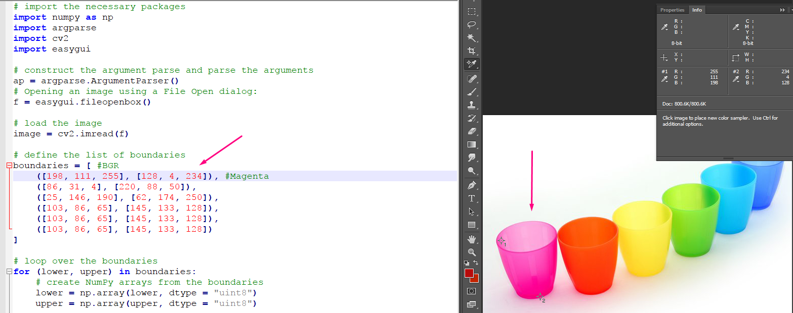
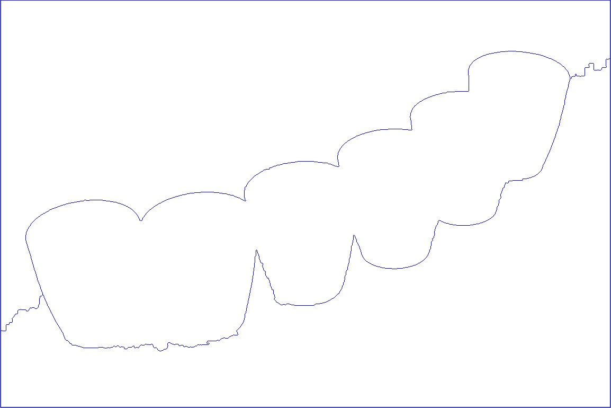
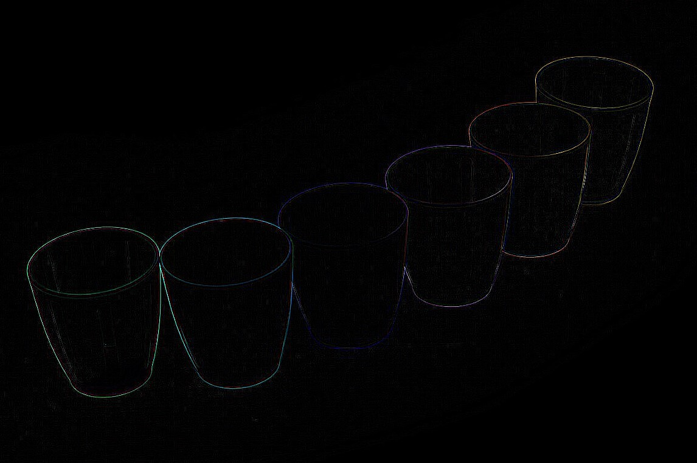

Split :
26/09/17
April : Binary object detection
Robert : GUI
Yassr : Exploring Colour Range
Connor : Identify Object in an image
Currently what the team is working on is researching the different ways we will be approaching the Project and doing research on what we need to know to make it happen.
I am currently researching colour range and how that can be used. I learnt that the BGR colour spectrum might not be the best for this project and am now investigating using HSV and create better thresholds and making two lower and two upper thresh holds based on HSV.

A problem we ran into when doing multi colour thresholding was that the image we are working with the cups (objects) are too close and the detection was being thrown off and weird.
boundaries = [ #BGR
([198, 111, 255], [128, 4, 234]), #Magenta
([86, 31, 4], [220, 88, 50]),
([25, 146, 190], [62, 174, 250]),
([103, 86, 65], [145, 133, 128]),
([103, 86, 65], [145, 133, 128]),
([103, 86, 65], [145, 133, 128])]
# loop over the boundaries
for (lower, upper) in boundaries: # create NumPy arrays from the boundaries
lower = np.array(lower, dtype = "uint8")
upper = np.array(upper, dtype = "uint8")
# find the colors within the specified boundaries and apply the mask
mask = cv2.inRange(image, lower, upper)
output = cv2.bitwise_and(image, image, mask = mask)
We switched to binary thresholding and tried to detect the objects so that once the objects are detected we can try separate them and detect the colours.
G = cv2.cvtColor(I, cv2.COLOR_BGR2GRAY)
#Adaptive thresholding
B = cv2.adaptiveThreshold(G, maxValue = 255, adaptiveMethod = cv2.ADAPTIVE_THRESH_GAUSSIAN_C, thresholdType = cv2.THRESH_BINARY, blockSize = 15, C = 7)
That didnt give the result we had hoped but we are currently trying the separate the objects
This week we tried to implement morphing and Erosion
NewMask = cv2.erode(ROI,shape)
NewMask = cv2.morphologyEx(B,cv2.MORPH_OPEN,shape
-----------------------------------------------------------------------------------------------------------------------------
At first, I attempted to use Image Segmentation with Watershed Algorithm using HSV the result of that gave back an outline of the cups

Code :
# Creating a plain white image
WhiteImg = np.zeros(np.shape(img), np.uint8)
WhiteImg[:,:] = (255,255,255)
HSV = cv2.cvtColor(img, cv2.COLOR_BGR2HSV)
G = cv2.cvtColor(HSV,cv2.COLOR_BGR2GRAY)
ret, thresh = cv2.threshold(G,0,255,cv2.THRESH_BINARY_INV+cv2.THRESH_OTSU)
# noise removal
kernel = np.ones((3,3),np.uint8)
opening = cv2.morphologyEx(thresh,cv2.MORPH_OPEN,kernel, iterations = 2)
# sure background area
sure_bg = cv2.dilate(opening,kernel,iterations=3)
# Finding sure foreground area
dist_transform = cv2.distanceTransform(opening,cv2.DIST_L2,5)
ret, sure_fg = cv2.threshold(dist_transform,0.7*dist_transform.max(),255,0)
# Finding unknown region
sure_fg = np.uint8(sure_fg)
unknown = cv2.subtract(sure_bg,sure_fg)
#Marker labelling
ret, markers = cv2.connectedComponents(sure_fg)
#Add one to all labels so that sure background is not 0, but 1
markers = markers+1
# Now, mark the region of unknown with zero
markers[unknown==255] = 0
markers = cv2.watershed(img,markers)
WhiteImg[markers == -1] = [255,0,0]
cv2.imshow("watershed", WhiteImg)
key = cv2.waitKey(0)
-----------------------------------------------------------------------------------------------------------------
I then Attempted to use a Kernal and Applying the High Pass Filter. The result was that the cups came out looking much better isolated and retained some of their colour and so I'd like to experement with combining the two or looking more into kernals

Code:
# Using Kernal and Applying the High Pass Filter I was able to better isolate the cups
k = np.array([[-1,-1,-1], [-1,8,-1], [-1,-1,-1]],
dtype=float)
F = cv2.filter2D(img,ddepth=-1,kernel=k)
cv2.imshow("Kernel", F)
key = cv2.waitKey(0)